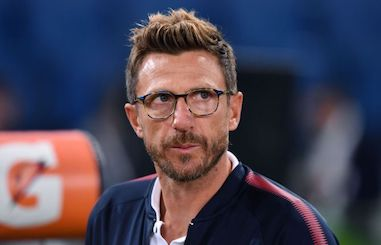

Roma, Di Francesco: ”We showed a lot of courage against Chelsea, Schick will likely be selected”
After the impressive display against Chelsea, Roma are traveling to Turin to face Sinisa Mihajlovic’s squad. In the pre match press conference the giallorossi’s manager Eusebio Di Francesco spoke about some of his individual players:”Schick will likely be selected, even though he obviously isn’t in peak form. De Rossi and Gonalons? They are different players but for me they are starters, I’ll alternate them based on the match. Aguanst Chelsea the Frenchman played because I saw him do very well. Moreno? In one of these matches he could start. I believe that to have a match like the one against Chelsea you need a lot of courage. I like to see my team attack the opponent in their half. Tomorrow’s match will be very difficult because we are coming off a difficult away match an Torino is a great team”